| 木材名稱 | 木材圖樣 | 吉他圖樣 | 木頭介紹 |
|---|---|---|---|
| 雲山木(spruze) | 木紋細密、色澤偏白的雲杉木，相信也是它受歡迎的主因之一。需要耐得住高拉力的面板最為恰當，扎實的結構及較佳的排水性，使得聲音傳導更為快速、音色呈現清亮扎實。開聲期一般長達十年才能達到巔峰，但成長幅度最大。 | 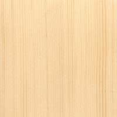 | 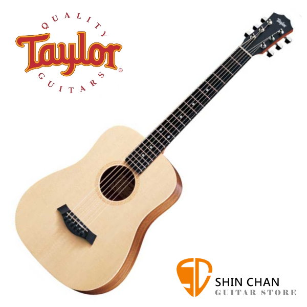 |
| 紅松木（Cedar） | 稱紅衫、雪松木，常見於古典吉他面板，質地比雲杉木軟，聲音傳導性更佳、音量也較大；保有溫潤富顆粒感的特質，較適合於表現出細膩的指彈技巧。細密的直條木紋與雲杉木相近，褐色是他容易辨識的外觀。彈奏爆發力十足，但成長幅度相對小的許多。 | 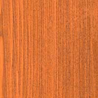 | 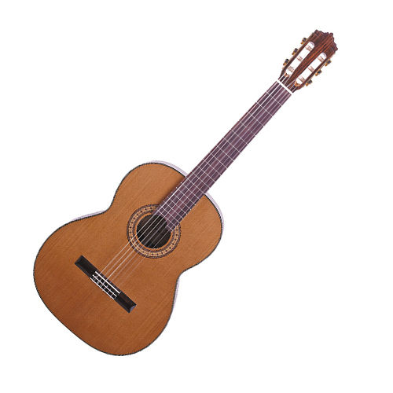 |
| 相思木（Koa） | 外觀亮麗突出，明顯色差木紋讓每一把吉他都個性十足。有著穿透力十足卻有著不銳利、甜美的音色，中高頻表現優異，早期用於夏威夷烏克麗麗，近代也廣泛使用在吉他上，但因夏威夷相思木品種稀有，受到國際組織管制而拉抬整體價格。 | 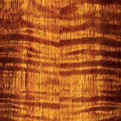 | 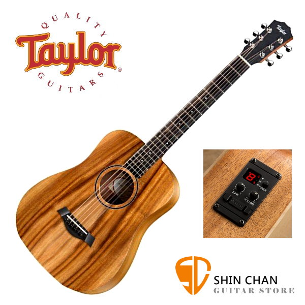 |
| 桃花心木（Mahogany） | 「溫潤」是最常聽到描述桃花心木的詞，不管是音色或是它的外觀都十分恰當，橘紅色與斷續紋路像盯著火焰般令人著迷。堅硬的質地特性運用廣泛，從桶身到琴頭、琴頸都有它的身影；中低頻有著渾厚副渲染的特性，尤其中頻最為明顯，泛音表現可以更突出。 | 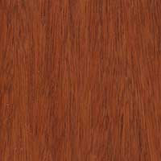 | 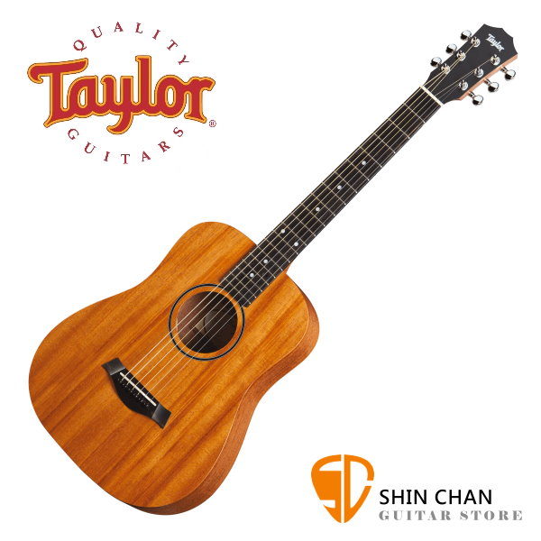 |
| 玫瑰木（Rosewood） | 也稱：紫檀木。木材雖硬卻重量太重，不適用需要高共振的面板，卻對低頻十分敏銳，常和中高頻較突出的雲杉木搭配做側底板，是經典的組合。因有豐富油脂的特性，不用上漆便十分耐久，有 90% 以上的吉他指板皆由玫瑰木製作。 | 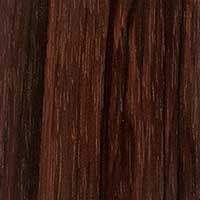 | 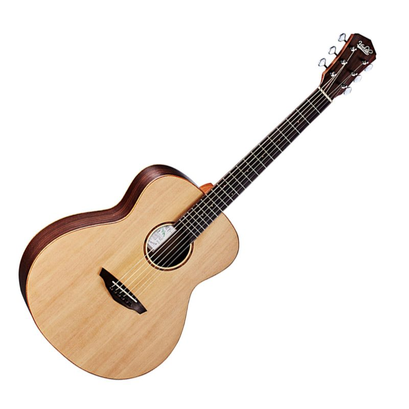 |
| 胡桃木（Walnut） | 胡桃木是密度中等的結實硬木，主要產自北美和歐洲，具有耐腐朽、容易乾燥的特點。 就外觀而言，不同胡桃木紋理稍有不同， 有捲曲波紋(Curl)、叉狀(Crotch)、樹瘤(Burl)等組合，十分特別，而強韌度、安定性、加工性能皆佳且相近。 其中低頻音色溫厚，與桃花心木相近，高頻則清晰明亮。 | 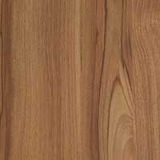 | 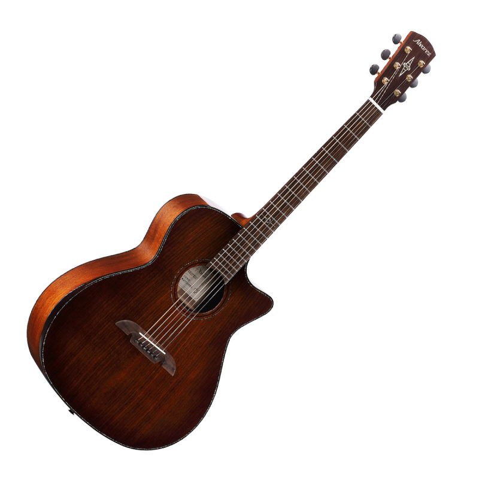 |
| 楓木（Maple） | 楓木大都來自美國和加拿大的東北和西北地區， 是一種堅硬、 密度非常大並沉重，其中高頻表現十分突出、顆粒分明，帶來明亮且共鳴時間較長的音色， 呈現與桃花心木截然不同的外放風格。常見的紋路有虎紋、雲形紋路等，視覺效果極佳。 | 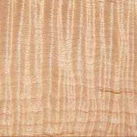 | 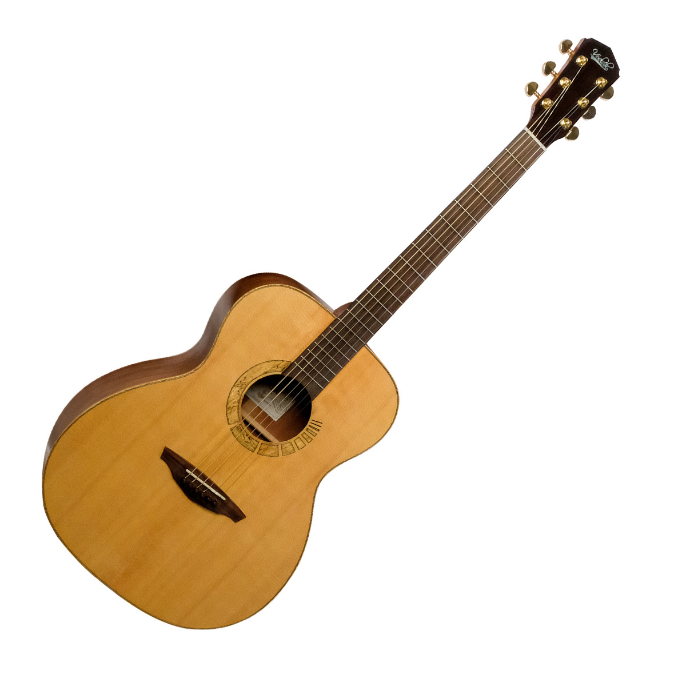 |